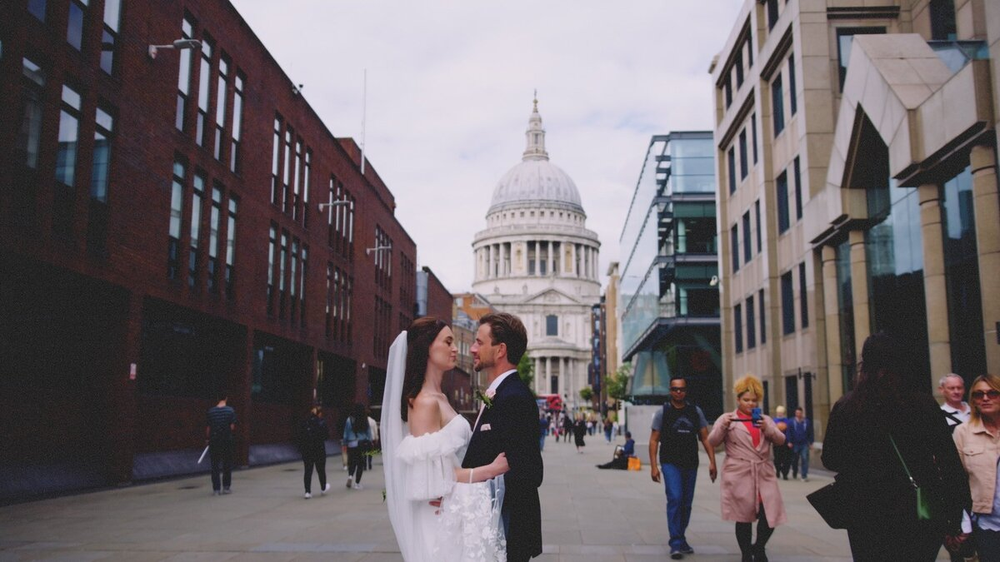

London is a city of icons, and as a wedding videographer, I've seen it from every angle. If you're planning a London wedding, choosing the right spot for your portraits is key. Here are my top 5 most cinematic locations in the city.
1. St. Paul's Cathedral
The area around St. Paul's offers a perfect mix of grand architecture and modern city vibes. The views from the Millennium Bridge looking back towards the dome are particularly stunning for video shots.

2. Southbank and the Thames
Walking along the Southbank gives you a dynamic range of backdrops. From the grit of the skate park to the sleek lines of the National Theatre, it's perfect for couples who want a bit of urban edge in their film.
3. Greenwich Park
For something more classic, Greenwich Park is hard to beat. The view from the Observatory over the Old Royal Naval College and the skyline beyond is one of the best in London. It's spacious, airy, and always feels grand.
4. The Streets of Soho
If you're looking for vibrant colors and a bit of energy, Soho is the place. The neon lights and bustling streets add a unique character to your wedding footage that you won't find anywhere else.
5. Marylebone and Mayfair
Elegant, timeless, and quintessentially London. The grand townhouses and quaint mews of Marylebone and Mayfair are perfect for sophisticated, high-end wedding films. Plus, you're close to some of the city's most iconic town halls.